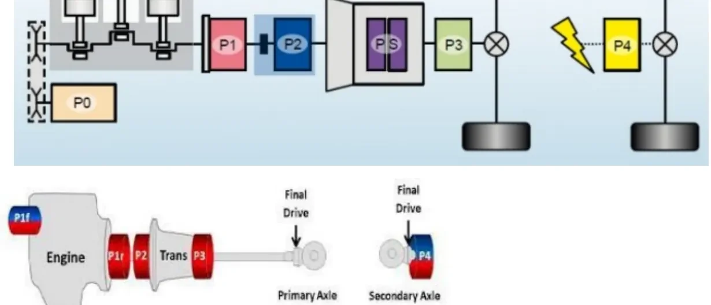

Hybrid Vehicle Architectures¶
Driven by the need to cut CO₂ emissions — especially in large cities — every major automotive group has restructured its product plans around hybrid and electric propulsion. Each manufacturer answered the challenge differently, which is why today's market offers a whole family of electrified layouts. This article gives you the map: how the electric machine can be placed in the powertrain (the P0–P4 positions), how vehicles are classified by electrification level (micro, mild, full, plug-in hybrid, and BEV), and how a real P1P4 plug-in hybrid switches between its operating modes.
What 'hybrid' means here
In this lesson hybrid always means a vehicle where one of the two power sources is an electric motor and the other is an internal combustion engine (ICE). Other combinations (e.g. hydraulic hybrids) exist but are out of scope.
Motor positions: the P0–P4 nomenclature¶
Hybrid architectures are named after where the electric machine sits in the driveline. The position determines what the motor can do: a belt-driven motor can only assist the engine, while a motor on its own axle can drive the car alone.

| Position | Location | Typical role |
|---|---|---|
| P0 | Connected to the ICE by a belt (belt alternator-starter) | Engine start/stop, small torque assist, recuperation |
| P1 (front = P1f, rear = P1r) | On the crankshaft, before the clutch | Stronger assist, generation; spins whenever the engine spins |
| P2 | After the clutch, at the transmission input | Can drive the car alone when the clutch decouples the ICE |
| P2.5 | Integrated inside the transmission | Assists the engine and covers torque during gearshifts |
| PS (power split) | Inside a dedicated planetary/CVT transmission | Blends ICE and electric torque continuously (Toyota-style) |
| P3 | Transmission output, before the final drive | Electric drive at the primary axle, off-axis from the ICE |
| P4 | Directly on the secondary axle (own final drive) | Independent electric axle — enables electric AWD |
The bottom half of the figure shows the same idea on a real layout: the ICE drives the primary axle through P1r/P2/P3 options and the transmission, while a P4 machine with its own final drive powers the secondary axle — the arrangement used by most Stellantis hybrids and BEVs you will work on.
Reading architecture names
A name like P1P4 is simply the list of positions in use: a P1 machine coupled to the engine plus a P4 machine on the rear axle. When you meet an unfamiliar hybrid, decode its P-code first — it tells you immediately which operating modes are physically possible.
The electrification ladder¶
The market categories differ mainly in battery size, motor power, and whether the car can move on electricity alone.
| Category | Electric machine | Battery | Electric-only driving | Example |
|---|---|---|---|---|
| Micro hybrid | Belt-driven (P0), less than 1 cv | 12 V secondary battery | None — only assists the ICE | Fiat 500 Hybrid |
| MHEV (mild hybrid) | Various positions, e.g. P2.5 | 48 V | A few meters, below ~10 km/h | Audi Q3 SB 1.5 TFSIe MHEV |
| FHEV (full hybrid) | One or more machines, various positions | ~6 kWh | Some kilometres, at OEM-defined speeds | Toyota Prius |
| PHEV (plug-in hybrid) | Same layouts as FHEV | Larger than FHEV, externally chargeable | Tens of kilometres | Jeep Compass / Renegade 4xe |
| BEV (battery electric) | P4 traction motor only | Large HV pack, e.g. 400 V | The only propulsion source | New Fiat 500e |
Micro hybrid¶
The entry level of electrification: an electric motor on the belt drive with a secondary 12 V battery, delivering less than 1 cv. It supports the thermal engine briefly in the moments when the engine would run far from its stoichiometric point, but it cannot move the vehicle by itself — it is an efficiency add-on, not a second powertrain.
Mild hybrid (MHEV)¶
Mild hybrids place the machine where it can do real work — a common choice is P2.5 inside the transmission, where the motor can fill in torque while the ICE is between gears. They can crawl in pure electric mode for a few meters at under 10 km/h (parking manoeuvres, stop-and-go queues) and typically carry a 48 V battery pack.
Full hybrid (FHEV)¶
The full hybrid was the real revolution: born in 1997 with Toyota, it was the first architecture to fundamentally change vehicle propulsion. An FHEV can drive electrically for a few kilometres at speeds defined by the manufacturer. Its battery (roughly 6 kWh class) is charged only by recovering kinetic energy — there is no plug, so the usable electric range is bounded by how much energy braking and coasting can put back.
Plug-in hybrid (PHEV)¶
A PHEV keeps the full-hybrid architecture and removes its two limits: the battery can be charged from an external charging point, and it can be larger, because its size is no longer constrained by what kinetic recuperation can store. The Jeep Compass and Renegade 4xe are the Stellantis examples of this layout — currently the most publicized hybrid technology on the market.
BEV architecture and torque control¶
In a BEV all propulsion comes from the electric motor. The motor connects to the front axle through a single fixed gear ratio — an electric machine's torque curve makes a multi-gear transmission unnecessary — so the motor is effectively a P4. The new Fiat 500e is the reference example: a 70 kW / 95 cv motor fed by a 400 V battery, delivering up to 200 Nm of torque with an expected range of about 320 km.
The powertrain controllers¶
A Stellantis BEV splits powertrain control across four main modules:
| Module | Responsibility |
|---|---|
| BPCM (battery pack control module) | HV battery supervisor: estimates voltage and power limits, drives the contactors, commands battery heating and cooling |
| IDCM (integrated DC-charge module) | Split in two subsystems: OBCM interfaces with the external charger (EVSE) to charge the HV battery; APM controls the DC/DC converter that keeps the 12 V battery charged |
| EVCU (electric vehicle control unit) | The powertrain brain: from vehicle status and driver inputs it computes the torque demand for the motor and hosts standard vehicle functions — Cruise Control, Speed Limiter, One Pedal Drive |
| EDM (electric drive module) | Turns the EVCU's torque demand into electrical actuation — phase currents and voltages that physically drive the motor |
flowchart LR
DRV["Driver inputs<br/>(pedal, CC, SL, OPD)"] --> EVCU
EVCU["EVCU<br/>torque demand"] -->|torque request| EDM["EDM<br/>inverter"]
EDM -->|phase currents| MOT["P4 e-motor"]
BPCM["BPCM<br/>HV battery limits"] -->|power limits| EVCU
BATT["HV battery 400 V"] <--> BPCM
BATT --> EDM
EVSE["External charger (EVSE)"] --> OBCM["IDCM: OBCM + APM"] --> BATTThe torque path is strictly layered: the EVCU decides how much torque is wanted (and the BPCM tells it how much power the battery can give or accept), the EDM decides how to produce it electrically, and the motor executes.
Negative torque: regenerating energy¶
The electric machine works in both directions — it can deliver positive power (traction) or negative power (generation), recharging the HV battery and extending range. Two everyday scenarios exploit this:
- Regenerative braking / One Pedal Drive (OPD). The motor brakes the car, converting kinetic energy into battery charge. With OPD active, the accelerator pedal has a neutral point: above it the motor produces positive (driving) torque, below it a negative (braking) torque. The driver can perform almost any manoeuvre — including stopping — by modulating only the accelerator, without touching the brake pedal.
- Cruise Control / Speed Limiter downhill. On a BEV, CC and SL can hold the target speed even on steep negative grades, because the motor's braking capability replaces the friction brakes. The grade's potential energy is harvested into the battery instead of being wasted as heat.
REEV — the range extender¶
A Range Extended Electric Vehicle is a hybrid where the ICE never drives the wheels: it exists only to recharge the HV battery and extend range. In mode terms, a REEV is a series-only hybrid.
The typical topology pairs a P4 traction motor (exactly as on a BEV, acting on the demanded torque) with an ICE coupled to a second, smaller machine in P0 or P1 position. That machine works purely as a generator: it converts the engine's torque into electrical energy for the battery. The driver always experiences electric drive; the engine runs (at its most efficient point) only when the battery needs support.
P1P4 plug-in hybrid: the operating modes¶
The P1P4 layout — used, for example, on the Jeep 4xe models — combines a P1f machine on the engine with a P4 machine on the rear axle, giving the energy manager three ways to move the car:
flowchart TD
ICE["ICE"] <-->|mechanical| P1["P1f motor/generator"]
P1 <-->|electrical| BATT["HV battery"]
BATT <-->|electrical| P4["P4 traction motor"]
P4 -->|mechanical| REAR["Rear axle"]
ICE -.->|parallel mode only| FRONT["Front axle"]| Mode | ICE | P1f machine | P4 machine | When used |
|---|---|---|---|---|
| EV | Off | Idle | Propels the car alone | Battery charged, moderate demand — zero-emission driving |
| Series | On, drives P1f | Generates, charging the battery | Propels the car alone | Battery low — the ICE runs as a generator, the car still drives electrically |
| Parallel | On, propels | Generates if kinetic energy is available | Propels together with the ICE | Maximum power demand — both power sources drive the vehicle |
In every mode, recuperation stays available: when the vehicle has kinetic energy to give back (braking, coasting), the P4 motor — and where coupled, the P1f machine — charge the battery instead of dissipating energy in the friction brakes.
Series vs. parallel
- Series: the engine's energy reaches the wheels only electrically (ICE → generator → battery → motor → wheels). The ICE can run at its optimal point, but the double energy conversion costs efficiency.
- Parallel: the engine drives the wheels mechanically, with the electric motor adding torque. More efficient at steady speed, and the only way to reach the vehicle's maximum combined power.
Choosing an architecture¶
The categories are not rivals but trade-offs along three axes:
- How much electric driving you want — from none (micro) to full-time (BEV).
- Battery and voltage class — 12 V assist, 48 V mild hybrid, ~6 kWh self-charging full hybrid, large externally-charged PHEV and BEV packs.
- Mechanical complexity vs. efficiency — each conversion between mechanical and electrical energy costs a few percent, so parallel paths favour highway efficiency while series paths favour urban stop-and-go.
Key takeaways
- Motor position (P0–P4) defines what a hybrid can do; architecture names like P1P4 are just the list of positions in use.
- The ladder runs micro (12 V belt assist) → mild (48 V, P2.5) → full (~6 kWh, kinetic-only charging, Toyota 1997) → plug-in (external charging, bigger battery) → BEV (single-ratio P4, e.g. 500e: 70 kW, 400 V, 200 Nm, ~320 km).
- On a BEV, the EVCU computes torque demand, the EDM actuates it as phase currents, the BPCM guards the HV battery, and the IDCM (OBCM + APM) handles charging and the DC/DC converter.
- Electric machines give negative torque too: regenerative braking, One Pedal Drive, and downhill speed-holding all recharge the battery.
- A REEV is a series-only hybrid (ICE → P0/P1 generator); a P1P4 PHEV runs EV, series, and parallel modes, recuperating through P4 (and P1f) in all of them.
Where this leads
The BEV layout and its controllers are treated in more depth in HEV Architecture — BEV; the machines themselves in Electric Motors. The vehicle networks that connect the EVCU, BPCM and EDM are the ones you will trace in CAN, LIN & Automotive Ethernet.
Source material¶
This article was distilled from the academy lesson materials:
- :material-file-pdf-box: HEV Architecture Hybrid — PDF, 237.1 KB